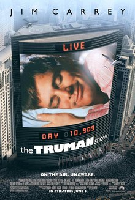

|  |
Zaman çizelgesi
| Bölüm | C | B |
|---|---|---|
| Hoş geldiniz, kurallar | 5 dk | 5 dk |
| Başlangıç sayfası (ilk cevap, 5 ifade) | 12 dk | 12 dk |
| The Present ve “soruların altındaki soru” | 7 dk | 7 dk |
| İzleme görevi | 3 dk (kart) | 3 dk (sözlü) |
| Film (103 dk) + duraklar | 2 × 5 dk | 3 × 6 dk |
| Ara + “Christof der ki” | 10 dk | 10 dk |
| Tartışma | 60 dk | 60 dk |
| Köprü ve hayattan soru görevi | 3 dk | 3 dk |
| Toplam | ~3 sa 33 dk | ~3 sa 41 dk |
Durma noktaları
| C (2 yazma durağı) | B (3 konuşmalı durak) |
|---|---|
| 1. Sylvia sahnesi bitince. Yaz: “Truman'ın ‘bildiği’ şeylerden hangisi yanlış çıkabilir?” Sor: “Birine inanmak için neye bakarız: kaç kişinin söylediğine mi, başka bir şeye mi?” | 1. Sylvia sahnesi bitince. “Sylvia tek kişi, kasaba yüzlerce kişi. Birine inanmak için neye bakarız?” |
| 2. Arabayla kaçış engellenip eve getirilince. “Kanıtın olmadan bildiğin bir şey var mı?” (su molası) | |
| 2. Ekip Truman'ı aramaya başlayınca. Yaz: “Christof Truman'ı koruduğunu söylüyor. Sen ne düşünüyorsun?” Sor: “Birini korumak için ondan gerçeği saklamak ne zaman doğru olabilir, ne zaman olamaz?” | 3. Ekip Truman'ı aramaya başlayınca. Aynı soru. |
Soruların altındaki soru (dk 5–12): Kart sorularını insan sorusuna çevir. Örnek: “Meryl Truman'ı seviyor muydu?” sorusu “Birinin bizi gerçekten sevdiğini nasıl biliriz?” olur. Sonra ortak soruyu göster: Bir şeyin gerçek olduğunu nasıl biliriz?
Kapanış ikilemi: deneyim makinesi (dk 42–50).
Soru merdiveni (dk 12–42). Her basamak yaklaşık 7–8 dakika. Kalıp: Öğrenci şunu derse, sen şunu sor.
Basamak 1: Filmden kavrama. “Truman otuz yıl ‘Karım beni seviyor’ diye biliyordu. Bu bilgi miydi?”
Basamak 2: Düşünce deneyi, rüya. “Şu an rüya görmediğini nasıl kanıtlarsın?”
Basamak 3: Kamp sorusuna bağlantı. “Hiçbir şeyden tam emin olamıyorsak gerçeği bilmek neden önemli? Truman mutluydu. Neden kapıdan çıktı?”
Basamak 4: Düşünce deneyi, deneyim makinesi. “Bağlanınca istediğin her şeyi yaşıyormuş gibi hissedeceğin ve makinede olduğunu unutacağın bir makine var. Ömür boyu bağlanır mısın?”
Kamp sorusuna dönüş (dk 50–55): “Sabah birçoğunuz ‘mutlu olmak’ yazdınız. Bugünden sonra bu cevaba ne eklemek gerekiyor?” Grubun cümlesini 1. gün kartına yaz: Bugün eklediğimiz parça ve Açık kalan soru.
Defter (dk 55–60): “Kamp sorusuna bugünkü cevabın: değişti mi? Değişmediyse ‘Değişmedi, çünkü …’ Bugün kafanı en çok karıştıran soru.”
Köprü (3 dk): “Truman kapıdan çıktığında kim olacak? Dışarıdaki dünyayı bilmek zor. Peki kendimizi biliyor muyuz? Yarın içerideki dünyaya bakacağız.” Hayattan soru görevi: “Kampta ‘Bundan gerçekten emin miyim?’ dediğin bir an yakala.”
Tıkanırsam
Hassas içerik: Truman'ın babasını denizde kaybettiğini sandığı geri dönüşler ve finaldeki fırtına var. Yakınını kaybetmiş öğrenciye önceden söyle. Rüya ve makine soruları “Hiçbir şey gerçek değilse?” kaygısı uyandırabilir. O durumda şunu söyle: “Bunlar düşünme oyunları. Sevdiklerinizden şüphe etmenizi istemiyoruz.”